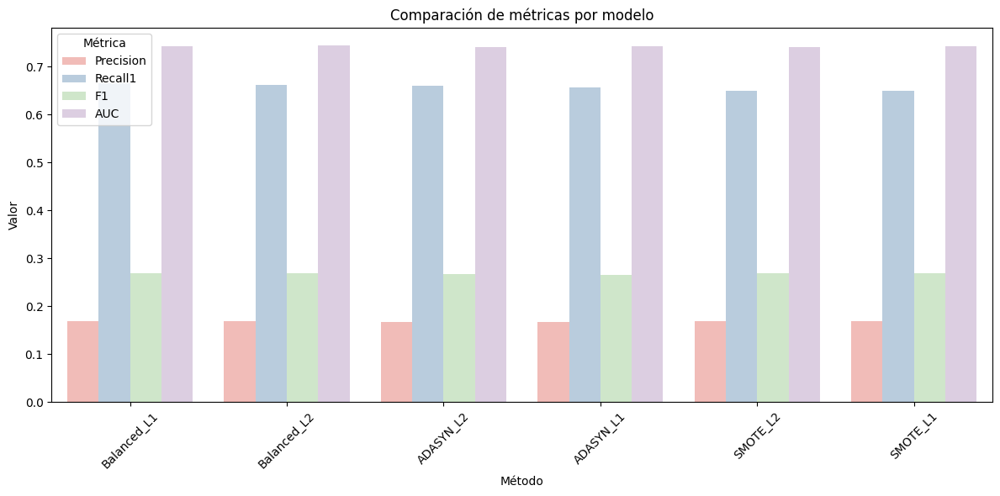
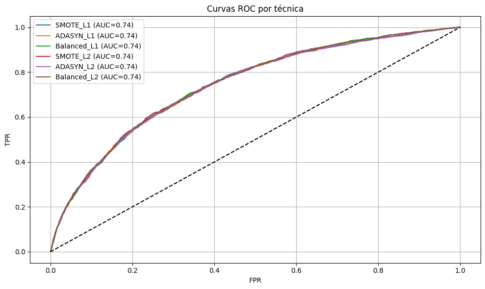
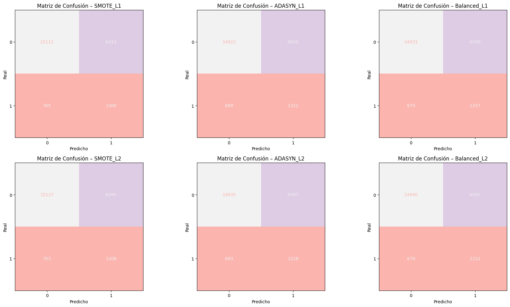
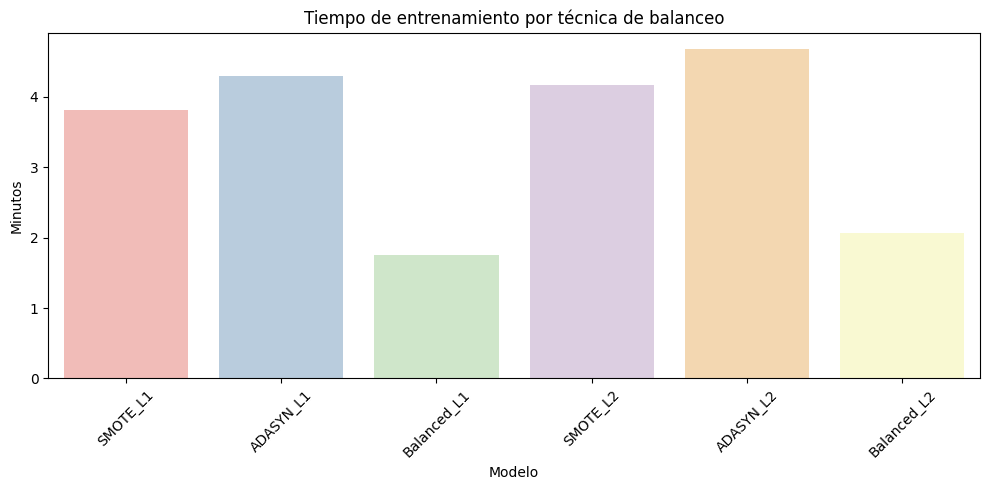
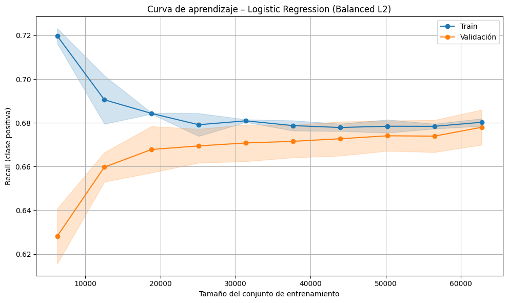
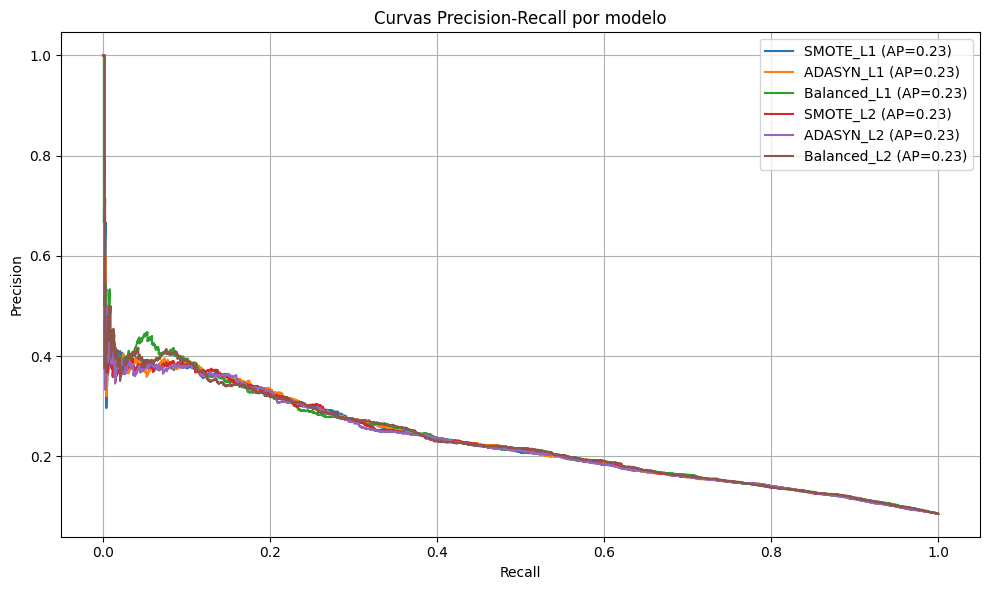
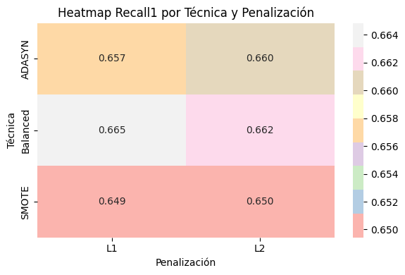
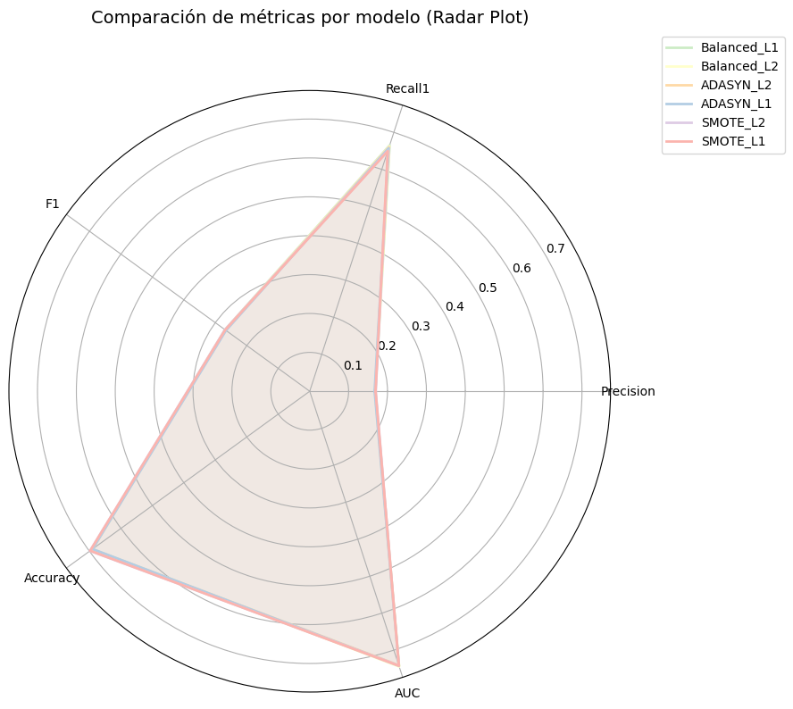

1.Imports y configuración#
import pandas as pd
import numpy as np
import time
import matplotlib.pyplot as plt
import seaborn as sns
from sklearn.model_selection import GridSearchCV, train_test_split
from sklearn.linear_model import LogisticRegression
from sklearn.metrics import (
classification_report, confusion_matrix, roc_auc_score,
roc_curve, precision_score, recall_score, accuracy_score, f1_score, RocCurveDisplay
)
from sklearn.pipeline import Pipeline
from sklearn.preprocessing import StandardScaler
from sklearn.compose import ColumnTransformer
from sklearn.impute import SimpleImputer
from sklearn.preprocessing import OneHotEncoder
from imblearn.pipeline import Pipeline as ImbPipeline
from imblearn.over_sampling import SMOTE, ADASYN
import warnings
warnings.filterwarnings("ignore")
import matplotlib.pyplot as plt
plt.rcParams.update({
"text.usetex": False, # Evita depender de LaTeX
"font.family": "sans-serif", # ompatible en todos los entornos
"font.sans-serif": ["DejaVu Sans"] # Fuente segura y preinstalada
})
2.Cargar datos y separación#
# df = pd.read_csv("ruta_al_dataset.csv")
df = pd.read_csv(r"C:\Users\DELL\Desktop\Aprendizaje_de_Maquina\credit_risk_the_end.csv")
X = df.drop(columns=["incumplimiento_credito"])
y = df["incumplimiento_credito"]
X_train, X_test, y_train, y_test = train_test_split(
X, y, test_size=0.3, stratify=y, random_state=42
)
3.Preprocesamiento#
num_cols = X.select_dtypes(include=["float64", "int64"]).columns.tolist()
cat_cols = X.select_dtypes(include=["object", "category"]).columns.tolist()
num_transformer = Pipeline([
("imputer", SimpleImputer(strategy="mean")),
("scaler", StandardScaler())
])
cat_transformer = Pipeline([
("imputer", SimpleImputer(strategy="most_frequent")),
("onehot", OneHotEncoder(handle_unknown="ignore"))
])
preprocessor = ColumnTransformer([
("num", num_transformer, num_cols),
("cat", cat_transformer, cat_cols)
])
4.Definir Pipelines por Penalización y Técnica de Balanceo#
pipelines = {
"SMOTE_L1": ImbPipeline([
("pre", preprocessor),
("over", SMOTE(random_state=42)),
("clf", LogisticRegression(penalty='l1', solver='saga', max_iter=1000))
]),
"ADASYN_L1": ImbPipeline([
("pre", preprocessor),
("over", ADASYN(random_state=42)),
("clf", LogisticRegression(penalty='l1', solver='saga', max_iter=1000))
]),
"Balanced_L1": Pipeline([
("pre", preprocessor),
("clf", LogisticRegression(penalty='l1', solver='saga', class_weight="balanced", max_iter=1000))
]),
"SMOTE_L2": ImbPipeline([
("pre", preprocessor),
("over", SMOTE(random_state=42)),
("clf", LogisticRegression(penalty='l2', solver='saga', max_iter=1000))
]),
"ADASYN_L2": ImbPipeline([
("pre", preprocessor),
("over", ADASYN(random_state=42)),
("clf", LogisticRegression(penalty='l2', solver='saga', max_iter=1000))
]),
"Balanced_L2": Pipeline([
("pre", preprocessor),
("clf", LogisticRegression(penalty='l2', solver='saga', class_weight="balanced", max_iter=1000))
])
}
# 5.GridSearchCV y Evaluación por Técnica
param_grid = {
"clf__C": [0.01, 0.1, 1, 10, 100]
}
results = []
for name, pipe in pipelines.items():
print(f"🔍 Entrenando {name}...")
t0 = time.time()
grid = GridSearchCV(pipe, param_grid, scoring="recall", cv=5, n_jobs=8)
grid.fit(X_train, y_train)
fit_time = (time.time() - t0) / 60
best_model = grid.best_estimator_
y_prob = best_model.predict_proba(X_test)[:, 1]
y_pred = best_model.predict(X_test)
results.append({
"Método": name,
"Mejor_C": grid.best_params_["clf__C"],
"Precision": precision_score(y_test, y_pred),
"Recall1": recall_score(y_test, y_pred),
"Accuracy": accuracy_score(y_test, y_pred),
"F1": f1_score(y_test, y_pred),
"AUC": roc_auc_score(y_test, y_prob),
"Tiempo(m)": fit_time,
"y_pred": y_pred,
"y_prob": y_prob,
"best_model": best_model
})
🔍 Entrenando SMOTE_L1...
🔍 Entrenando ADASYN_L1...
🔍 Entrenando Balanced_L1...
🔍 Entrenando SMOTE_L2...
🔍 Entrenando ADASYN_L2...
🔍 Entrenando Balanced_L2...
6. Métricas de Métricas por Algoritmo#
import seaborn as sns
from matplotlib import colors
# Crear un colormap pastel (inspirado en la paleta Pastel1)
pastel_cmap = sns.color_palette("Pastel1", as_cmap=True)
# Tabla con formato pastel
df_results = pd.DataFrame(results).drop(columns=["y_pred", "y_prob", "best_model"])
df_results = df_results.sort_values(by="Recall1", ascending=False)
# Aplicar estilo
styled = df_results.style.background_gradient(
cmap=pastel_cmap,
subset=["Precision", "Recall1", "Accuracy", "F1", "AUC", "Tiempo(m)"]
).format("{:.4f}", subset=["Precision", "Recall1", "Accuracy", "F1", "AUC", "Tiempo(m)"])
display(styled)
| Método | Mejor_C | Precision | Recall1 | Accuracy | F1 | AUC | Tiempo(m) | |
|---|---|---|---|---|---|---|---|---|
| 2 | Balanced_L1 | 0.010000 | 0.1687 | 0.6648 | 0.6914 | 0.2691 | 0.7433 | 1.7508 |
| 5 | Balanced_L2 | 1.000000 | 0.1683 | 0.6624 | 0.6915 | 0.2684 | 0.7445 | 2.0669 |
| 4 | ADASYN_L2 | 0.100000 | 0.1678 | 0.6604 | 0.6911 | 0.2676 | 0.7406 | 4.6755 |
| 1 | ADASYN_L1 | 0.010000 | 0.1669 | 0.6574 | 0.6903 | 0.2662 | 0.7422 | 4.3021 |
| 3 | SMOTE_L2 | 0.010000 | 0.1698 | 0.6504 | 0.6984 | 0.2693 | 0.7415 | 4.1618 |
| 0 | SMOTE_L1 | 0.010000 | 0.1693 | 0.6494 | 0.6977 | 0.2685 | 0.7424 | 3.8067 |
7. Boxplot de Métricas por Algoritmo#
# Reorganizar para gráfico de barras agrupadas
df_long = df_results.melt(
id_vars="Método",
value_vars=["Precision", "Recall1", "F1", "AUC"],
var_name="Métrica",
value_name="Valor"
)
plt.figure(figsize=(12, 6))
sns.barplot(data=df_long, x="Método", y="Valor", hue="Métrica", palette="Pastel1")
plt.title("Comparación de métricas por modelo")
plt.xticks(rotation=45)
plt.tight_layout()
plt.show()

8.Curvas ROC#
plt.figure(figsize=(10, 6))
for res in results:
fpr, tpr, _ = roc_curve(y_test, res["y_prob"])
plt.plot(fpr, tpr, label=f"{res['Método']} (AUC={res['AUC']:.2f})")
plt.plot([0, 1], [0, 1], 'k--')
plt.title("Curvas ROC por técnica")
plt.xlabel("FPR")
plt.ylabel("TPR")
plt.legend()
plt.grid()
plt.tight_layout()
plt.show()

9.Matrices de Confusión#
from sklearn.metrics import ConfusionMatrixDisplay
import matplotlib.pyplot as plt
# Número de modelos
n_modelos = len(results)
n_cols = 3
n_rows = int(np.ceil(n_modelos / n_cols))
fig, axes = plt.subplots(n_rows, n_cols, figsize=(18, 5 * n_rows))
axes = axes.flatten()
for i, res in enumerate(results):
disp = ConfusionMatrixDisplay.from_predictions(
y_test, res["y_pred"], ax=axes[i], cmap="Pastel1", colorbar=False
)
axes[i].set_title(f"Matriz de Confusión – {res['Método']}")
axes[i].set_xlabel("Predicho")
axes[i].set_ylabel("Real")
# Si sobran ejes, los escondemos
for j in range(i + 1, len(axes)):
fig.delaxes(axes[j])
plt.tight_layout()
plt.show()

10.Gráfico de tiempo de entrenamiento#
df_metrics = pd.DataFrame([
{
"Modelo": res["Método"],
"Precision": res["Precision"],
"Recall": res["Recall1"],
"F1": res["F1"],
"Accuracy": res["Accuracy"],
"AUC": res["AUC"],
"Tiempo (min)": res["Tiempo(m)"], # <- clave correcta
"C óptimo": res["Mejor_C"]
}
for res in results
])
import matplotlib.pyplot as plt
import seaborn as sns
plt.figure(figsize=(10, 5))
sns.barplot(
data=df_metrics,
x="Modelo",
y="Tiempo (min)",
palette="Pastel1"
)
plt.xticks(rotation=45)
plt.title("Tiempo de entrenamiento por técnica de balanceo")
plt.ylabel("Minutos")
plt.tight_layout()
plt.show()

11.Tabla de Hiperparámetros Óptimos por Técnica y Penalización#
# Crear tabla resumen de parámetros óptimos
tabla_hiperparametros = pd.DataFrame([
{
"Técnica de Balanceo": res["Método"].split("_")[0],
"Penalización": "L1" if "L1" in res["Método"] else "L2",
"Modelo": res["Método"],
"C óptimo": res["Mejor_C"]
}
for res in results
])
# Ordenar por técnica y penalización
tabla_hiperparametros = tabla_hiperparametros.sort_values(by=["Técnica de Balanceo", "Penalización"])
# Mostrar tabla
display(tabla_hiperparametros.style.format({"C óptimo": "{:.4f}"}).background_gradient(cmap="Pastel1", subset=["C óptimo"]))
| Técnica de Balanceo | Penalización | Modelo | C óptimo | |
|---|---|---|---|---|
| 1 | ADASYN | L1 | ADASYN_L1 | 0.0100 |
| 4 | ADASYN | L2 | ADASYN_L2 | 0.1000 |
| 2 | Balanced | L1 | Balanced_L1 | 0.0100 |
| 5 | Balanced | L2 | Balanced_L2 | 1.0000 |
| 0 | SMOTE | L1 | SMOTE_L1 | 0.0100 |
| 3 | SMOTE | L2 | SMOTE_L2 | 0.0100 |
12.Curva de aprendizaje#
from sklearn.model_selection import learning_curve
from sklearn.linear_model import LogisticRegression
from sklearn.pipeline import make_pipeline
import numpy as np
# Elegimos un modelo representativo, por ejemplo Balanced_L2
modelo = pipelines["Balanced_L2"]
# Obtener curvas de aprendizaje
train_sizes, train_scores, val_scores = learning_curve(
estimator=modelo,
X=X,
y=y,
cv=5,
scoring="recall",
train_sizes=np.linspace(0.1, 1.0, 10),
n_jobs=8
)
# Calcular media y desvío estándar
train_mean = np.mean(train_scores, axis=1)
train_std = np.std(train_scores, axis=1)
val_mean = np.mean(val_scores, axis=1)
val_std = np.std(val_scores, axis=1)
# Plot
plt.figure(figsize=(10, 6))
plt.plot(train_sizes, train_mean, 'o-', label="Train", color="tab:blue")
plt.plot(train_sizes, val_mean, 'o-', label="Validación", color="tab:orange")
plt.fill_between(train_sizes, train_mean - train_std, train_mean + train_std, alpha=0.2, color="tab:blue")
plt.fill_between(train_sizes, val_mean - val_std, val_mean + val_std, alpha=0.2, color="tab:orange")
plt.title("Curva de aprendizaje – Logistic Regression (Balanced L2)")
plt.xlabel("Tamaño del conjunto de entrenamiento")
plt.ylabel("Recall (clase positiva)")
plt.legend()
plt.grid(True)
plt.tight_layout()
plt.show()

13.Código para Curva Precision-Recall (todos los modelos comparados)#
from sklearn.metrics import precision_recall_curve, average_precision_score
plt.figure(figsize=(10, 6))
for res in results:
precision, recall, _ = precision_recall_curve(y_test, res["y_prob"])
ap_score = average_precision_score(y_test, res["y_prob"])
plt.plot(recall, precision, label=f"{res['Método']} (AP={ap_score:.2f})")
plt.xlabel("Recall")
plt.ylabel("Precision")
plt.title("Curvas Precision-Recall por modelo")
plt.legend()
plt.grid(True)
plt.tight_layout()
plt.show()

14.Heatmap de Recall1 por Técnica vs Penalización#
import warnings
warnings.filterwarnings("ignore")
df_heat = pd.DataFrame([
{
"Técnica": res["Método"].split("_")[0],
"Penalización": "L1" if "L1" in res["Método"] else "L2",
"Recall1": res["Recall1"]
}
for res in results
])
# Pivot con argumentos nombrados
df_pivot = df_heat.pivot(index="Técnica", columns="Penalización", values="Recall1")
plt.figure(figsize=(6, 4))
sns.heatmap(df_pivot, annot=True, fmt=".3f", cmap="Pastel1")
plt.title("Heatmap Recall1 por Técnica y Penalización")
plt.tight_layout()
plt.show()

15.Radar Plot por modelo para comparar métricas#
import warnings
warnings.filterwarnings("ignore")
from math import pi
import matplotlib.pyplot as plt
# Seleccionar y normalizar métricas (entre 0 y 1 si es necesario)
metricas = ["Precision", "Recall1", "F1", "Accuracy", "AUC"]
df_radar = df_results[["Método"] + metricas].copy()
# Reordenar para plot circular
labels = metricas
num_vars = len(labels)
angles = [n / float(num_vars) * 2 * pi for n in range(num_vars)]
angles += angles[:1] # cerrar el círculo
# Estilo pastel
pastel_colors = sns.color_palette("Pastel1", n_colors=len(df_radar))
# Crear figura
plt.figure(figsize=(10, 8))
ax = plt.subplot(111, polar=True)
# Radar por modelo
for idx, row in df_radar.iterrows():
values = row[metricas].tolist()
values += values[:1] # cerrar el círculo
ax.plot(angles, values, label=row["Método"], linewidth=2, color=pastel_colors[idx])
ax.fill(angles, values, alpha=0.1, color=pastel_colors[idx])
# Estética
ax.set_xticks(angles[:-1])
ax.set_xticklabels(labels)
ax.set_title("Comparación de métricas por modelo (Radar Plot)", y=1.1, fontsize=14)
ax.set_rlabel_position(30)
plt.legend(loc='upper right', bbox_to_anchor=(1.3, 1.1))
plt.tight_layout()
plt.show()

16.Guardar#
import joblib
import os
# Ruta del escritorio del usuario
desktop_path = os.path.join(os.environ["USERPROFILE"], "Desktop")
# Ruta completa para guardar modelos en el Escritorio
model_dir = os.path.join(desktop_path, "modelos_guardados")
os.makedirs(model_dir, exist_ok=True)
# Guardar cada modelo en results
for res in results:
nombre_archivo = os.path.join(model_dir, f"{res['Método']}.joblib")
joblib.dump(res["best_model"], nombre_archivo)
print("Modelos y pipelines guardados exitosamente en el Escritorio.")
Modelos y pipelines guardados exitosamente en el Escritorio.